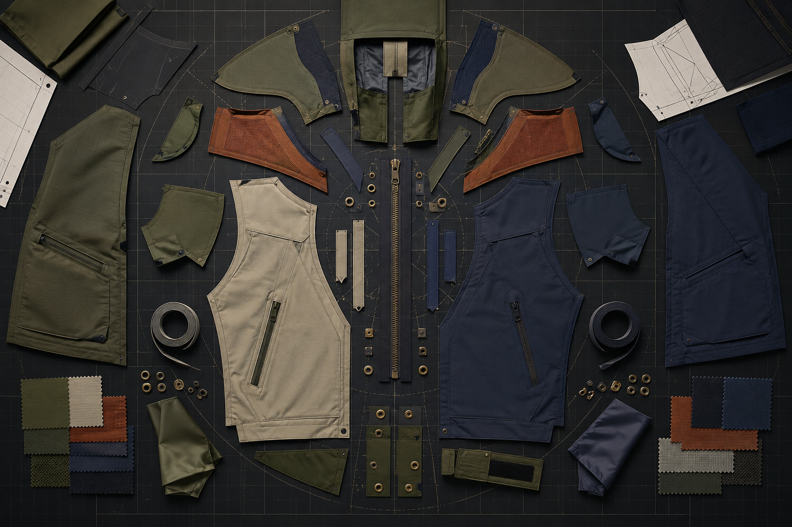

Reading Jacket Fit Through Movement
Original practical guidance for climate, layering, construction, fit and care.
Open dispatch ↗ROUTE JOURNAL / 12 ORIGINAL DISPATCHES
Long-form field guides for jacket fit, materials, protection, layering and responsible care.
Original practical guidance for climate, layering, construction, fit and care.
Open dispatch ↗
02Original practical guidance for climate, layering, construction, fit and care.
Open dispatch ↗ 03
03Original practical guidance for climate, layering, construction, fit and care.
Open dispatch ↗Original practical guidance for climate, layering, construction, fit and care.
Open dispatch ↗Original practical guidance for climate, layering, construction, fit and care.
Open dispatch ↗06Original practical guidance for climate, layering, construction, fit and care.
Open dispatch ↗Original practical guidance for climate, layering, construction, fit and care.
Open dispatch ↗Original practical guidance for climate, layering, construction, fit and care.
Open dispatch ↗09Original practical guidance for climate, layering, construction, fit and care.
Open dispatch ↗Original practical guidance for climate, layering, construction, fit and care.
Open dispatch ↗Original practical guidance for climate, layering, construction, fit and care.
Open dispatch ↗12Original practical guidance for climate, layering, construction, fit and care.
Open dispatch ↗